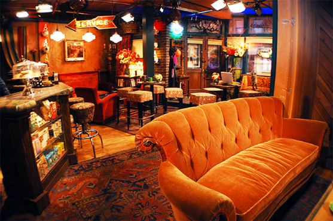

The Grind was founded in 1987 by our grandmother, a warm and lively figure who lovingly crafted the menu from scratch. We are a quaint, quiet cafe - the perfect place to curl up on an armchair on a Sunday evening. We offer a full espresso and brew-bar menu as well as fresh breakfast and lunch options.
